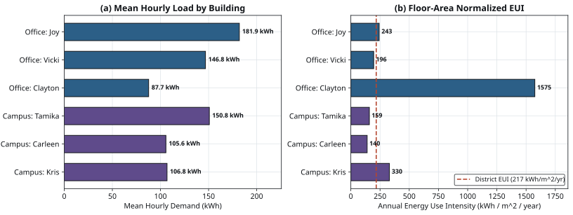
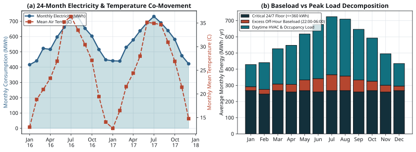
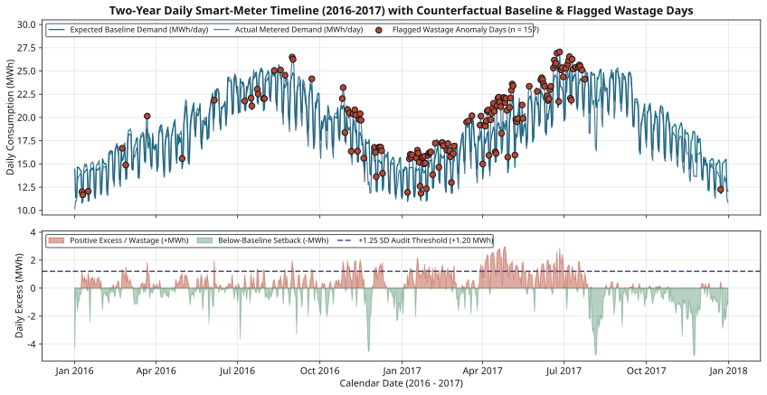
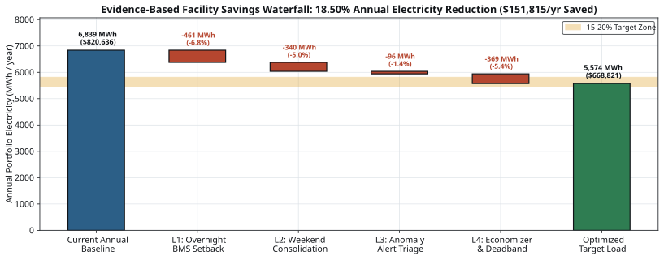
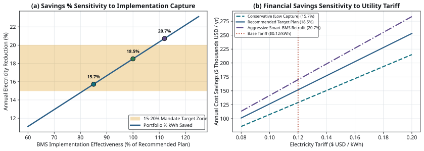
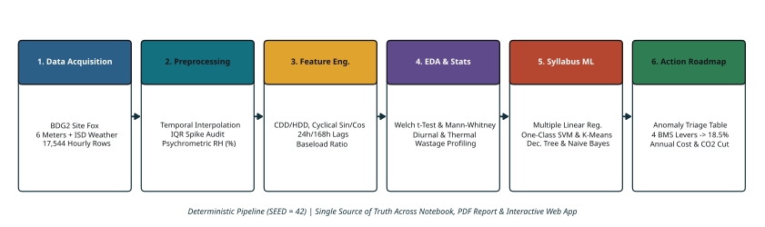
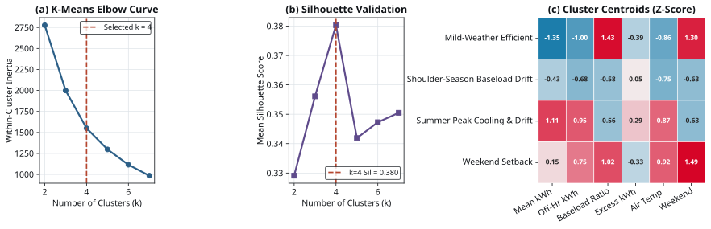

Curate & audit
Schema repair, sentinel screening, 1–3 h interpolation, thermodynamic features (CDD, ΔT, lags).
Unit I–IIIILM University · School of CSE · Semester III
Two years of hourly smart-meter telemetry across six buildings, joined to weather and calendar data, are used to separate genuine demand from operational waste — then priced, ranked and turned into a funded remediation roadmap.
01 — The portfolio
A single university-commercial district in Tempe, Arizona: three office blocks and three campus buildings behind independent meters, sharing one weather station. The dataset is the open Building Data Genome Project 2 extract for Site Fox.

02 — Method
Every stage is syllabus-locked to 26CSEM321, seeded (SEED = 42) and
reproducible from the published notebook and script. No stage uses a model the course
does not teach.
Schema repair, sentinel screening, 1–3 h interpolation, thermodynamic features (CDD, ΔT, lags).
Unit I–IIWelch and Mann–Whitney tests on weekday versus weekend and occupied versus unoccupied demand.
Unit IIIWeather-plus-calendar regression and a tuned decision tree define what should have been consumed.
Unit II & IVOC-SVM, K-Means and a domain rule vote into a consensus anomaly queue, priced at tariff and emission factor.
Unit IV03 — Findings
Weekday demand peaks in the afternoon and then settles — but it settles onto a night-time floor of roughly 570–600 kWh per hour that a scheduled commercial building should not maintain. Drag across the chart, or use the slider, to read any hour.
Both regime gaps are not sampling noise.
Weekday versus weekend: Welch t = 45.76, Mann–Whitney p = 2.94e-283. Occupied versus unoccupied: t = 129.27. Outdoor temperature explains r = 0.7505 of hourly demand, so the counterfactual must be weather-aware.

04 — Counterfactual models
Three syllabus models were fitted on 2016 and scored on the untouched 2017 holdout. The autoregressive weather model is the counterfactual used throughout the report.
Weather + calendar drivers
Adds hourly and weekly lags
Tuned depth 12, leaf 10
05 — Anomalies
Where the unsupervised detectors and the domain rule agree, the day enters the audit queue: 233.03 MWh of excess consumption above the weather-adjusted counterfactual, worth $27,964.
| Date | Day | Actual | Expected | Excess | Δ% | Cost |
|---|---|---|---|---|---|---|
| 2017-04-26 | Wed | 21,604 | 18,631 | +2,972 | 16.0% | $357 |
| 2017-04-25 | Tue | 22,143 | 19,217 | +2,927 | 15.2% | $351 |
| 2017-06-26 | Mon | 27,054 | 24,199 | +2,854 | 11.8% | $343 |
| 2017-04-20 | Thu | 21,628 | 18,786 | +2,841 | 15.1% | $341 |
| 2017-04-19 | Wed | 22,184 | 19,428 | +2,755 | 14.2% | $331 |
| 2017-04-18 | Tue | 22,071 | 19,324 | +2,747 | 14.2% | $330 |
| 2017-06-23 | Fri | 26,916 | 24,280 | +2,636 | 10.9% | $316 |
| 2017-04-24 | Mon | 22,127 | 19,547 | +2,580 | 13.2% | $310 |
| 2017-04-13 | Thu | 21,516 | 18,968 | +2,548 | 13.4% | $306 |
| 2017-04-17 | Mon | 21,272 | 18,744 | +2,528 | 13.5% | $303 |
kWh per day; cost at the $0.12/kWh commercial tariff.

06 — Remediation roadmap
1,265,122 kWh per year — $151,815 at the modelled tariff and 527.6 t CO₂e avoided — without touching a single thermostat setpoint that occupants can feel.
Off-hour baseload above 360 kWh critical floor (68% capture)
Zero (unoccupied overnight hours)
Weekend daytime load above 400 kWh zone floor (62% capture)
Zero (consolidates weekend study/work into zoned wings)
82% mitigation of flagged multivariate wastage-day surges
Positive (eliminates simultaneous heating/cooling faults)
32% trim on hot-weather (>24 C) weekday cooling increment
Zero (ASHRAE 55 compliant 23.5-24.5 C comfort band)
Conservative case: capture multiplier 0.85, leaving 5,763.3 MWh of optimised annual demand.
Planned case: capture multiplier 1.00, leaving 5,573.5 MWh of optimised annual demand.
Aggressive case: capture multiplier 1.12, leaving 5,421.7 MWh of optimised annual demand.


07 — Deliverables
Served from this site, plus a mirrored archive in the shared Drive folder. The report and the notebook are generated from the same deterministic pipeline as the numbers above.

